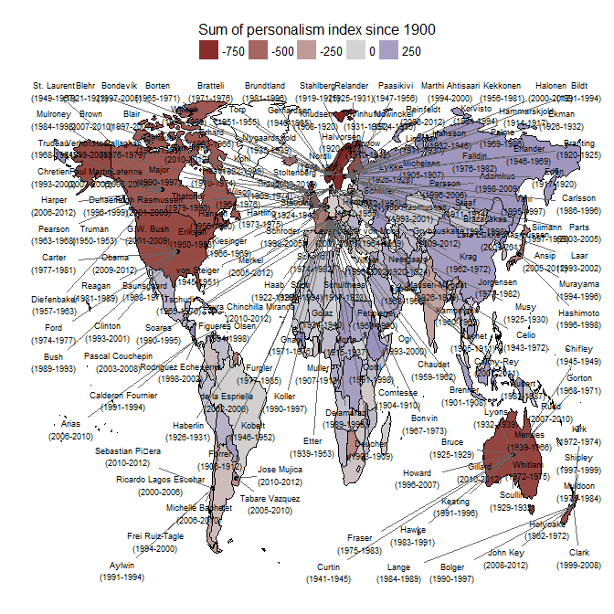
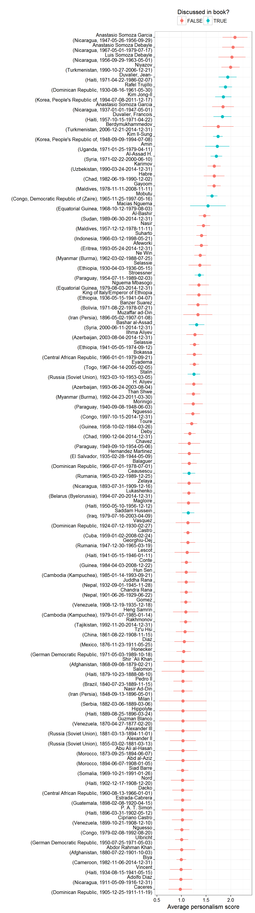
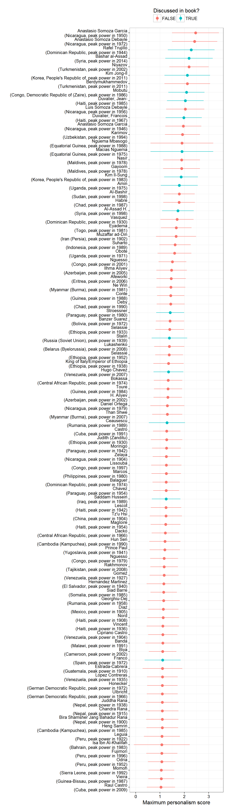
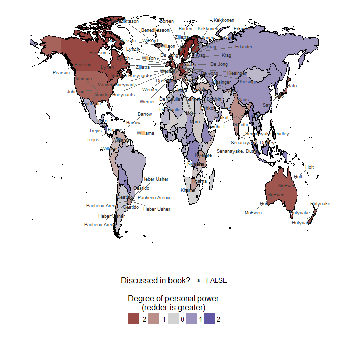
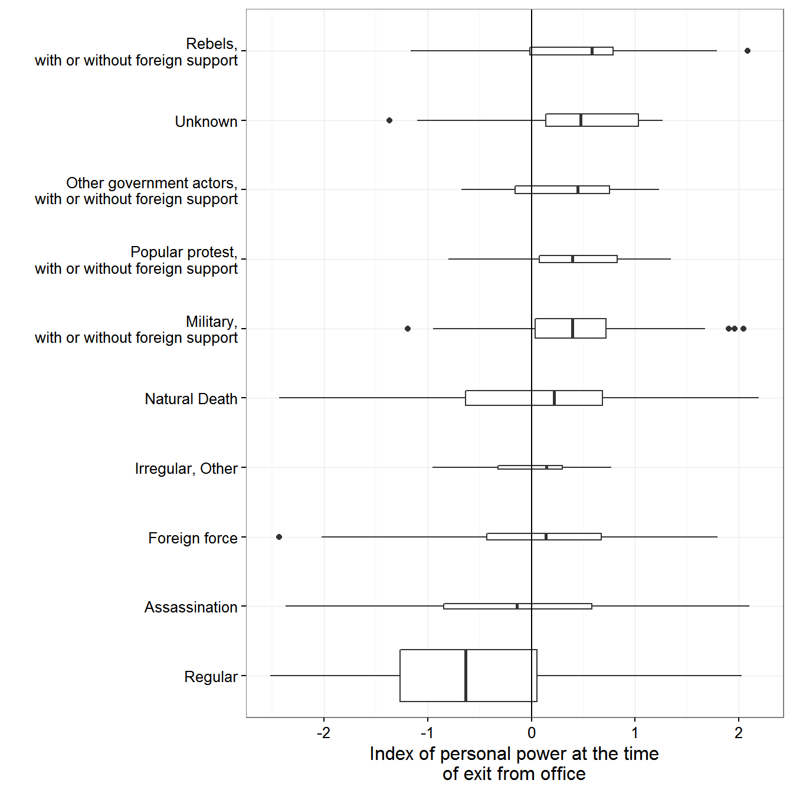
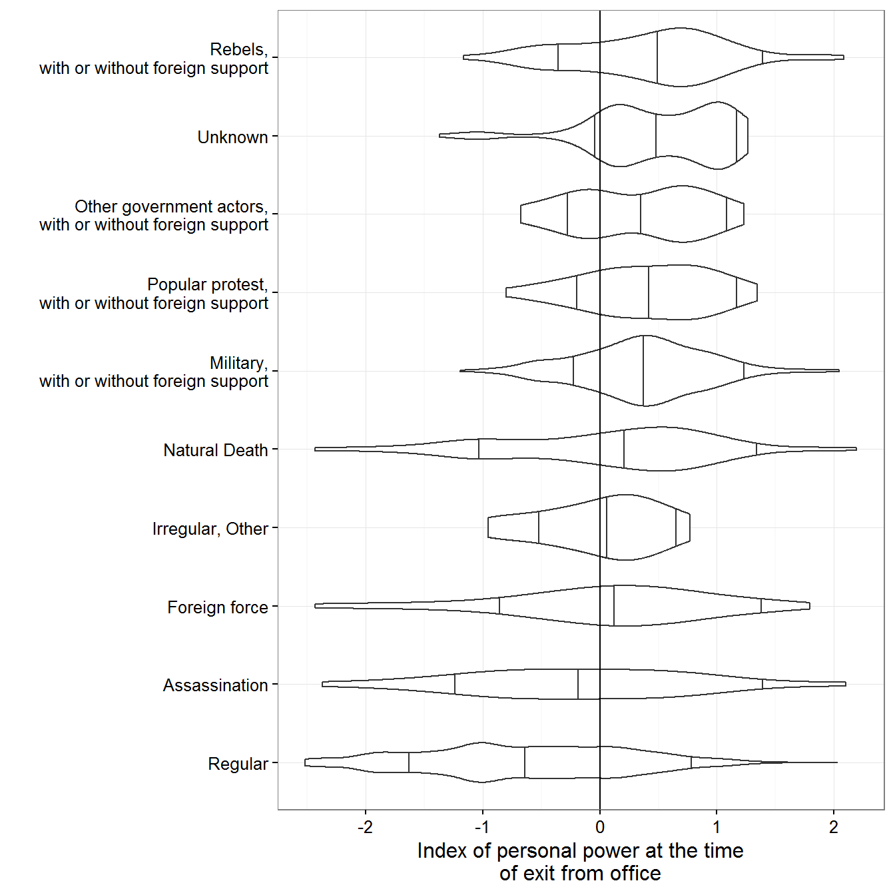

Chapter 4: Personal Rule
Xavier Marquez
2016-10-28
Introduction
This vignette shows how to replicate and extend the charts in chapter 4 of my book Non-democratic Politics: Authoritarianism, Dictatorships, and Democratization (Palgrave Macmillan, 2016). It assumes that you have downloaded the replication package as follows:
if(!require(devtools)) {
install.packages("devtools")
}
devtools::install_github('xmarquez/AuthoritarianismBook')It also assumes you have the dplyr, ggplot2, scales, forcats, lubridate, ,ggrepel, maptools, rgeos, and knitr packages installed:
if(!require(dplyr)) {
install.packages("dplyr")
}
if(!require(ggplot2)) {
install.packages("ggplot2")
}
if(!require(scales)) {
install.packages("forcats")
}
if(!require(forcats)) {
install.packages("scales")
}
if(!require(lubridate)) {
install.packages("lubridate")
}
if(!require(knitr)) {
install.packages("knitr")
}
if(!require(ggrepel)) {
install.packages("ggrepel")
}
if(!require(maptools)) {
install.packages("maptools")
}
if(!require(rgeos)) {
install.packages("rgeos")
}Figure 4.1: Personal Rule Around the World
Original figure
Figure 4.1 is a chloropleth map of countries according to the degree to which they have experienced personalistic rule. The measure of personal power is a latent variable index of personalism derived from a large number of other measures (and described in more detail in this vignette). The leader data is from Goemans, Gleditsch, and Chiozza (2009):
library(AuthoritarianismBook)
library(dplyr)
library(ggplot2)
library(lubridate)
top_leaders <- personal_scores %>%
filter(year >= 1900, year <= 2012) %>%
mutate(rank_world = percent_rank(-z1)) %>%
filter(rank_world > 0.95)
leader_data <- archigos %>%
group_by(obsid, GWn, leader, startdate,enddate) %>%
do(data.frame(year = year(.$startdate):year(.$enddate)))
top_leaders <- left_join(top_leaders,leader_data) ## Joining, by = c("GWn", "year")top_leaders <- top_leaders %>%
filter(!is.na(leader)) %>%
group_by(country_name,leader) %>%
summarise(min_year = min(year), max_year = max(year), avg_z1 = mean(z1), startdate = min(startdate), enddate = max(enddate)) %>%
filter(max_year - min_year > 1, leader != "King of Italy/Emperor of Ethiopia")
data <- personal_scores %>%
filter(year >= 1900, year <= 2012) %>%
group_by(GWn, country_name) %>%
mutate(z1 = -z1) %>%
summarise(mean_personalism = mean(z1,na.rm=TRUE),
sum_personalism = sum(z1,na.rm=TRUE),
n = n())
top_leaders <- left_join(top_leaders,population_data %>% distinct(country_name,lat,lon))## Joining, by = "country_name"world <- world %>% filter(id != "Antarctica")
data <- data %>% mutate(country_name = ifelse(country_name == "Germany (Prussia)", "German Federal Republic", country_name))
library(ggrepel)
ggplot() + geom_map(aes(fill = -sum_personalism,map_id = country_name),map = world,data = data) +
geom_path(data = world,aes(y = lat,x = long,group = group)) +
scale_fill_gradient2(mid = "lightgrey") +
geom_point(data = top_leaders, aes(x=lon,y=lat)) +
theme_minimal() +
theme(legend.position = "top") +
labs(fill = "Sum of personalism index since 1900",x = "",y = "") +
guides(fill = guide_legend(title.position = "top")) +
scale_y_continuous(breaks=NULL) +
scale_x_continuous(breaks=NULL) +
geom_text_repel(data = top_leaders, aes(x=lon,y=lat,label=paste0(leader,"\n(",min_year,"-",max_year,")")), force = 0.25, size=2.5)
Extension 1: Who are the leaders with the greatest degree of personal power?
This is not necessarily the best way of presenting this information. For example, we can calculate an average personalism score for each leader in the dataset (among those who lasted at least five years in power), accounting for the degree of uncertainty in the index:
leader_data <- leader_data %>%
full_join(personal_scores) %>%
group_by(country_name, GWn, leader, startdate, enddate) %>%
filter(n() > 5) %>%
summarise(avg_personalism = mean(-z1),
se_personalism = sqrt(sum(((z1 - pct975)/1.96)^2))/n()) %>%
mutate(pct975 = avg_personalism + 1.96*se_personalism,
pct025 = avg_personalism - 1.96*se_personalism) %>%
ungroup() %>%
mutate(rank = percent_rank(avg_personalism),
in_book = grepl(paste(c("amin","ceausescu","stalin",
"hugo chavez","duvalier","hitler",
"saddam","al-assad","kim il",
"kim jong","trujillo","mao",
"macias","mobutu","stroessner",
"franco"),collapse = "|"),
leader,
ignore.case = TRUE)) %>%
filter(!is.na(leader)) ## Joining, by = c("GWn", "year")ggplot(data = leader_data %>% filter(rank > 0.9), aes(color = in_book)) +
geom_pointrange(aes(x = reorder(paste0(leader,"\n(",country_name,", ",startdate,"-",enddate,")"), avg_personalism),
y = avg_personalism,
ymax = pct975,
ymin = pct025)) +
labs(x = "", y = "Average personalism score", color = "Discussed in book?") +
coord_flip() +
theme_bw() +
theme(legend.position = "top") +
guides(color = guide_legend(title.position = "top"))
We can also look at maximum, rather than average, scores for personal power, which shows a different picture:
leader_data <- archigos %>%
group_by(obsid, GWn, leader, startdate,enddate) %>%
do(data.frame(year = year(.$startdate):year(.$enddate))) %>%
full_join(personal_scores) %>%
group_by(country_name, GWn, leader, startdate, enddate) %>%
filter(n() > 5) %>%
summarise(max_personalism = max(-z1, na.rm = TRUE),
pct975 = -max(pct975[-z1 == max_personalism]),
pct025 = -min(pct025[-z1 == max_personalism]),
peak_year = round(mean(year[-z1 == max_personalism], na.rm = TRUE))) %>%
ungroup() %>%
mutate(rank = percent_rank(max_personalism),
in_book = grepl(paste(c("amin","ceausescu","stalin",
"hugo chavez","duvalier","hitler",
"saddam","al-assad","kim il",
"kim jong","trujillo","mao",
"macias","mobutu","stroessner",
"franco"),collapse = "|"),
leader,
ignore.case = TRUE)) %>%
filter(!is.na(leader)) ## Joining, by = c("GWn", "year")ggplot(data = leader_data %>% filter(rank > 0.9), aes(color = in_book)) +
geom_pointrange(aes(x = reorder(paste0(leader,"\n(",country_name,", peak power in ", peak_year,")"), max_personalism),
y = max_personalism,
ymax = pct975,
ymin = pct025)) +
labs(x = "", y = "Maximum personalism score", color = "Discussed in book?") +
coord_flip() +
theme_bw() +
theme(legend.position = "top") +
guides(color = guide_legend(title.position = "top"))
Extension 2: Map of leaders with the greatest degree of personal power in 1967
Or we can show a map of personal power for a particular year. Here’s 1967:
library(maptools)
library(rgeos)
world_1967 <- cshapes::cshp(as.Date("1967-1-1")) %>%
fortify(region = "GWCODE") %>%
mutate(GWn = id)
leader_data <- archigos %>%
group_by(obsid, GWn, leader, startdate,enddate) %>%
do(data.frame(year = year(.$startdate):year(.$enddate))) %>%
full_join(personal_scores) %>%
full_join(extended_uds %>%
select(country_name, GWn, year, lat, lon)) %>%
ungroup() %>%
filter(year == 1967) %>%
mutate(rank = percent_rank(-z1),
in_book = grepl(paste(c("amin","ceausescu","stalin",
"hugo chavez","duvalier","hitler",
"saddam","al-assad","kim il",
"kim jong","trujillo","mao",
"macias","mobutu","stroessner",
"franco"),collapse = "|"),
leader,
ignore.case = TRUE)) %>%
filter(!is.na(leader)) ## Joining, by = c("GWn", "year")## Joining, by = c("GWn", "year", "country_name")ggplot() +
geom_path(data = world,
aes(y = lat, x = long, group = group)) +
geom_map(aes(fill = z1,
map_id = GWn),
map = world_1967,
data = personal_scores %>% filter(year == 1967)) +
geom_path(data = world_1967,
aes(y = lat, x = long, group = group)) +
geom_text_repel(data = leader_data %>% filter(rank > 0.8),
aes(x = lon,
y = lat,
label = leader,
color = forcats::fct_rev(as.factor(in_book))),
force = 0.25, size=2.5) +
scale_fill_gradient2(mid = "lightgrey") +
scale_color_grey() +
theme_minimal() +
theme(legend.position = "bottom") +
labs(fill = "Degree of personal power
(redder is greater)",
x = "",
y = "",
color = "Discussed in book?") +
guides(fill = guide_legend(title.position = "top")) +
scale_y_continuous(breaks=NULL) +
scale_x_continuous(breaks=NULL) +
theme(legend.position = "bottom") 
Fig 4.2: Manner of exit for all political leaders, by degree of personal power
Original figure
Information on leader exit is from Goemans, Gleditsch, and Chiozza (2009). The code for this figure corrects a small error in the published figure (so small as to be almost unnoticeable!):
data <- left_join(archigos %>% mutate(year = year(enddate)),
personal_scores %>%
group_by(country_name) %>%
mutate(z1 = -z1, lag_value = lag(z1))) %>%
mutate(exitcode = ifelse(exit == "Natural Death", "Natural Death", as.character(exitcode))) %>%
mutate(exitcode = ifelse(grepl("Military",exitcode),"Military,\nwith or without foreign support",
ifelse(grepl("Popular",exitcode),
"Popular protest,\nwith or without foreign support",
ifelse(grepl("Other Government", exitcode),
"Other government actors,\nwith or without foreign support",
ifelse(grepl("Rebels", exitcode),
"Rebels,\nwith or without foreign support",
exitcode)))),
exitcode = plyr::mapvalues(exitcode,
from = c("Removed through Threat of Foreign Force",
"Assassination by Unsupported Individual"),
to = c("Foreign force","Assassination"))) ## Joining, by = c("country_name", "GWn", "year")ggplot(data=data %>% filter(exit != "Still in Office"),
aes(x=reorder(exitcode, lag_value, FUN=median, na.rm=TRUE), y= lag_value)) +
geom_boxplot(varwidth=TRUE) +
coord_flip() +
theme_bw() +
labs(x="",y="Index of personal power at the time\nof exit from office") +
scale_fill_grey(na.value="white") +
guides(fill=guide_legend(title.position="top")) +
theme(legend.position="bottom") +
geom_hline(yintercept=0,linetype=1)## Warning: Removed 61 rows containing non-finite values (stat_boxplot).
Extension 1: Violin plot of distribution of leader exits by degree of personal power
We can also use a violin plot to see the distribution better:
ggplot(data=data %>% filter(exit != "Still in Office"),
aes(x=reorder(exitcode, lag_value, FUN=median, na.rm=TRUE), y= lag_value)) +
geom_violin(draw_quantiles = c(0.15, 0.5, 0.95)) +
coord_flip() +
theme_bw() +
labs(x="",y="Index of personal power at the time\nof exit from office") +
scale_fill_grey(na.value="white") +
guides(fill=guide_legend(title.position="top")) +
theme(legend.position="bottom") +
geom_hline(yintercept=0,linetype=1)## Warning: Removed 61 rows containing non-finite values (stat_ydensity).
Fig. 4.3: Manner of exit of non-democratic leaders
Original figure
This figure uses data from Svolik (2012) about the manner of exit of each political leader. There is an error in the book that is corrected in the code below:
data <- svolik_leader %>%
group_by(country_name) %>%
mutate(next_pol_aff = lead(pol_aff)) %>%
filter(!is.na(next_pol_aff), !is.na(exit)) %>%
ungroup()
data <- left_join(data, count(data, exit)) ## Joining, by = "exit"ggplot(data=data,
aes(fill = next_pol_aff,
x = reorder(exit, n))) +
geom_bar() +
coord_flip() +
theme_bw() +
labs(x="",y="Number of non-democratic leaders",
fill="Political affiliation \nof next leader") +
guides(fill=guide_legend(title.position="top")) +
theme(legend.position="bottom")